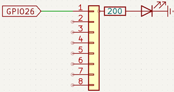
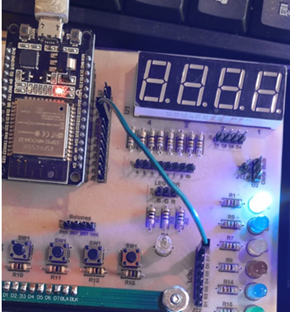

Objetivo. Aprender a cablear un pin de salida del microcontrolador y llevarlo a un pin de salida de los pines LEDs. Ejecutar un programa en Micropython con el IDE Thonny y correrlo en el ambiente del entrenador QMT-020.
Procedimiento.
-
Conectar un cable desde el pin GPIO26 del microcontrolador al primer pin de los LEDs de salida
(LED azul).


- Abrir Thonny e identificar que el microcontrolador esté conectado correctamente.
- Crear un nuevo archivo en Thonny y escribir el código mostrado a continuación.
-
Ejecutar el programa y observar el parpadeo del LED.
# Ejercicio 15: “Encender LED externo con estructura while” import time from machine import Pin led=Pin(26, Pin.OUT) # Define la señal del pin led como de salida while True: # Ciclo infinito led.value(1) # Enciende la luz del LED time.sleep(1.5) led.value(0) # Apaga la luz del LED time.sleep(1.5)
Actividades sugeridas.
- Observar la ejecución del programa y anotar el tiempo de encendido y apagado del LED.
- Disminuir el tiempo de parpadeo del LED.
- Aumentar el tiempo de parpadeo del LED.
- Guarde el programa en la carpeta.
- Guarde el programa en el microcontrolador.